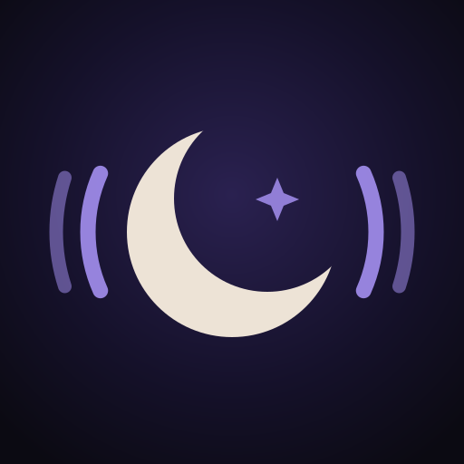

Sessiz Nöbet
Gece emzirmesinde eşine fısıltısız haber ver
Sessiz Nöbet, gece bebeğini besleyen ebeveynin tek bir düğmeye dokunarak eşinden yardım istemesini sağlar. Eşin telefonu ses çıkarmadan titrer; eşin “Geliyorum” dediğinde ekranında görürsün.
İletişim
Soru, öneri ya da bir hata için bize yaz:
Sık sorulanlar
Nasıl eşleşiriz?
İki telefonda da uygulamayı açın. Birinde “Kodumu göster”e, diğerinde “Eşimin kodunu tara”ya dokunun ve kodu okutun. Bir kez yapmanız yeter.
Eşimin telefonu gece titremiyor.
Çağrıyı alan telefonda uygulamanın Ayarlar → Gece kurulumu ekranındaki adımları yapın. Kısaca:
- iPhone: Ayarlar → Bildirimler → Sessiz Nöbet'te bildirimler ve “Zamana Duyarlı Bildirimler” açık olsun. Ayarlar → Odak → Uyku'da Sessiz Nöbet'e izin verin. Ayarlar → Sesler ve Dokunuş → Dokunuş “Her zaman” olsun.
- Android: Bildirimler ve “Nöbet çağrıları” kategorisi açık olsun; Rahatsız Etmeyin'de Sessiz Nöbet'i istisna yapın; telefon tam sessizde değil titreşimde kalsın; pil tasarrufunda uygulamayı “Kısıtlama yok” yapın.
Sonra Ayarlar → “Bu telefonu titret”e dokunup ekranı kilitleyin; 5 saniye içinde titremeli.
Telefon gerçekten hiç ses çıkarmaz mı?
Evet. Çağrılar sessiz bir ses dosyasıyla gelir; telefon yalnızca titrer. Apple Watch ya da akıllı saat takılıysa bileğinize dokunur.
İnternet gerekiyor mu?
Evet, iki telefonun da internete (Wi‑Fi ya da mobil veri) bağlı olması gerekir. Çağrılar Apple ve Google'ın bildirim altyapısıyla iletilir.
Hesap açmam gerekiyor mu?
Hayır. Hesap, e-posta ya da şifre yok. Eşleşme bilgisi ve çağrı geçmişi yalnızca telefonlarınızda saklanır.